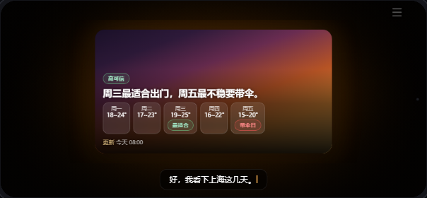
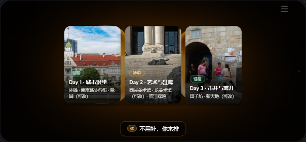
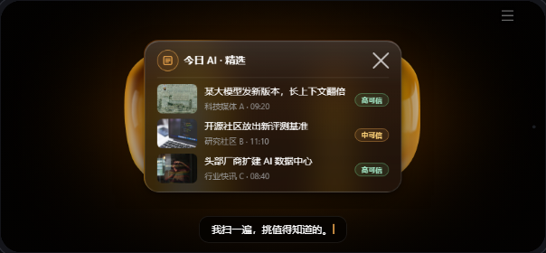
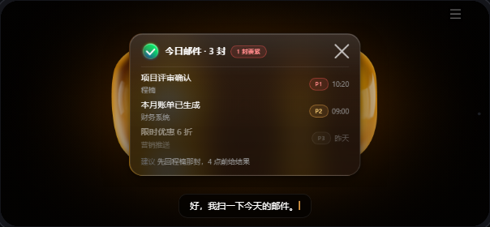
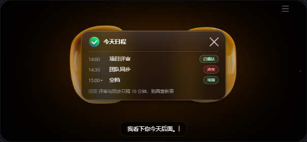
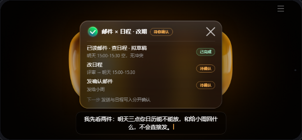
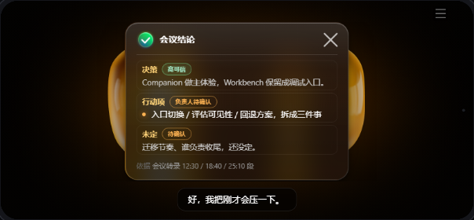
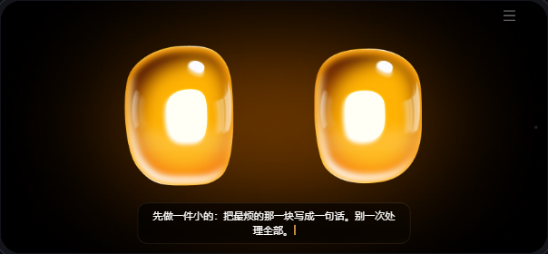

九场景 · 每个配最合适的「展现形式」
皮肤 = 展现形式。每个场景载入时落到它最合适的默认形式（顶栏仍可手动切 卡片/气泡/沉浸）。
天气/旅行/餐厅天然适合沉浸（图片/天色为主）；新闻/邮件/日程/会议是结构化信息，用编辑卡。
新闻 case 三形式全做（见 review-news.html）。陪聊目前是纯语音对话，下一步做成对话气泡线程（需引擎加"气泡累积"模式）。
沉浸聚焦 · Immersive Spotlight 图片/天色为主，文字压 scrim · default_skin=aura

查天气 · 沉浸天卡（CSS 天色渐变 + 5 日条，无需图片）

上海旅行 · 三日封面横向陈列（真实外滩/西岸/田子坊）
 找餐厅 · 全幅封面（店内实景 + 安静/距离/人均）
找餐厅 · 全幅封面（店内实景 + 安静/距离/人均）
编辑卡 · Editorial Card 结构化、可扫读 · default_skin=glass

新闻播报 · 精选列表（可切气泡/沉浸）

邮件简报 · 优先级列表

今日日程 · 事件列表

邮件×日程联动 · 步骤列表

会议总结 · 决策/行动/未定 分段
纯语音对话 下一步 → 对话气泡线程

陪聊 · 情绪承接 · 现为底部对话字幕（待升级为气泡线程）